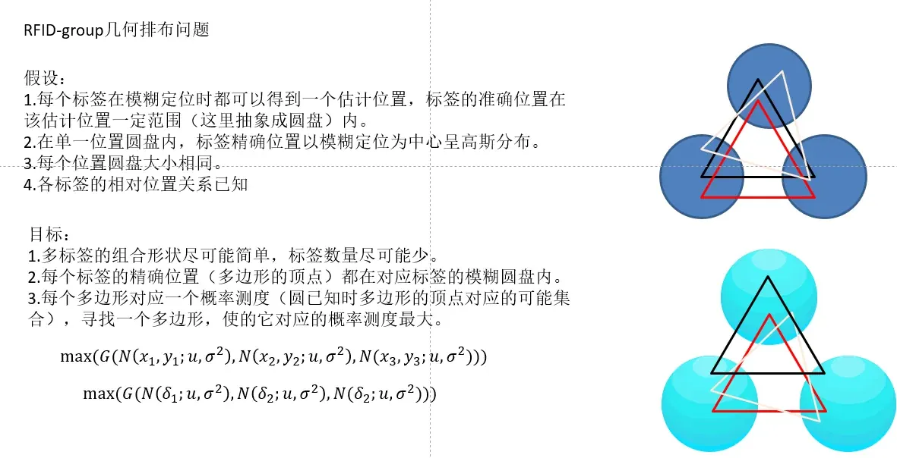
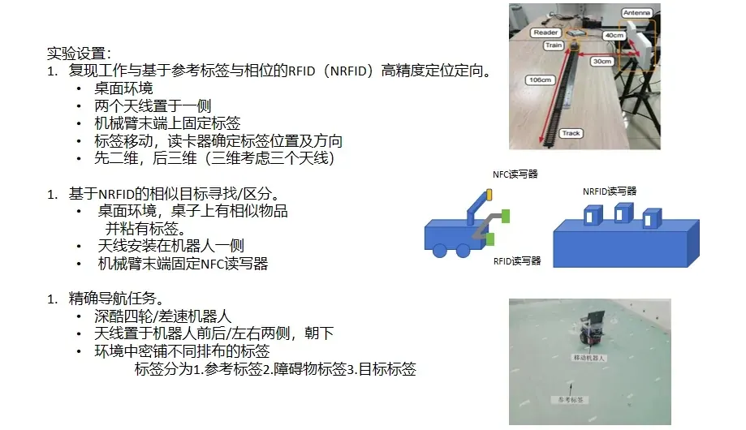

定位研究Localization research
RFID/NFC 电子视觉标签定位RFID/NFC electronic visual tag localization
探索把远距离 RFID 检出与近距离多 NFC 读数结合，用于遮挡条件下的位置和方向推断。Explores combining longer-range RFID detection with multi-NFC readings for position and orientation inference under occlusion.

研究问题Research question
传统 RFID 能在较远距离发现标签，近距离 NFC 读取可提供更局部的空间信息。项目讨论两类读数如何组合，使遮挡或弱光时仍能辅助定位与方向判断。Conventional RFID can detect a tag from farther away, while close-range NFC readings provide more local spatial information. The work asks how to combine them for localization and orientation inference when visual tags are obscured or lighting is poor.
标签设计与分析Tag design & analysis
PPT 提出无源 RFID 与多 NFC 集成标签，并分析固定尺寸和读取范围下的标签数量、几何排布及最坏方向误差，包括三角形和多边形排布。The slides propose a passive tag combining RFID with multiple NFC elements and analyze tag count, geometric arrangement, and worst-case orientation error under size and read-range constraints, including triangular and polygonal layouts.
当前边界Current boundary
现有材料主要是问题定义、推导和实验计划，没有可对应的实机视频或完整定量验证。因此该页将其标为研究探索。The supplied material focuses on problem formulation, derivations, and planned experiments. It has no corresponding robot demo or complete quantitative validation, so this page presents it as research exploration.
